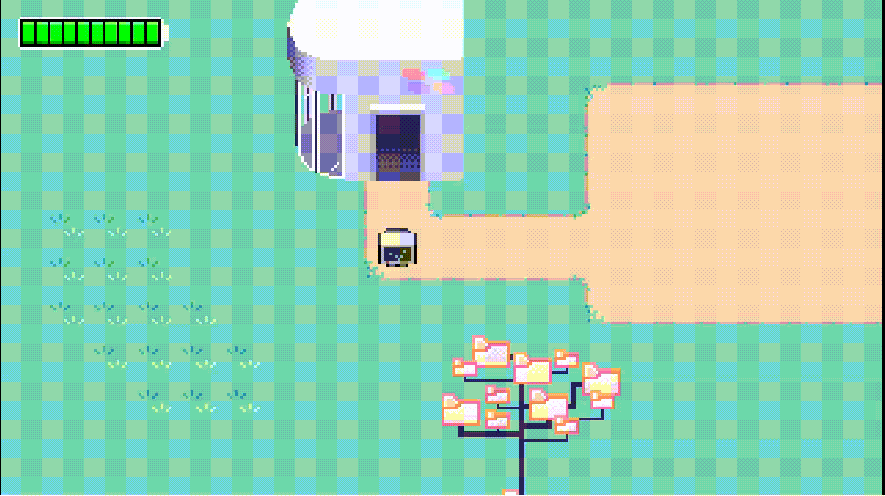

História

Tudo começa com o pequeno C (0x43) dormindo nas raízes de uma árvore, até que ele acorda com um estrondo gigantesco. O susto é tão grande que ele sobreaquece e reinicia, pois foi muita coisa para processar de uma só vez. Ele acorda em sua casa e percebe que alguém o levou até lá: a fada, ou * (U+002A). Depois que C desperta, ela explica a que basicamente, o mundo deles está sofrendo uma infecção viral.

Ele sai de casa, mas logo é perseguido por vários vírus. Assustado, corre em direção à vila e se esconde dentro de uma das casas. Lá, encontra um corpo e, junto dele, um mouse, que se tornará a principal arma do pequeno C. Um vírus ainda está perseguindo C, mas ele consegue derrotá-lo usando o mouse e volta a explorar a vila.


O C encontra um NPC, esse NPC é o Computador Ancião, que entrega a ele o livro de feitiços, essencial para derrotar os vírus durante a jornada. Outo é o Porteiro, que insiste para o C levar um código, o Porteiro possui um número e pede que C o pegue e vá até a Torre de Sinal para transmitir o código e desbloquear o portão para o Mundo das Memórias.
Esse portão dá acesso a diferentes áreas, como o Mundo das RAMs e a Arcade, além de permitir que C encontre o Boss da Arcade. O pequeno C derrota o Boss da Arcade e segue para o Mundo das Memórias.
Voltar